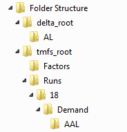
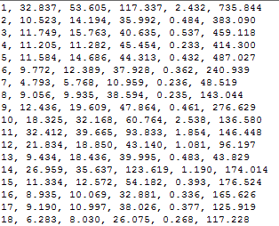
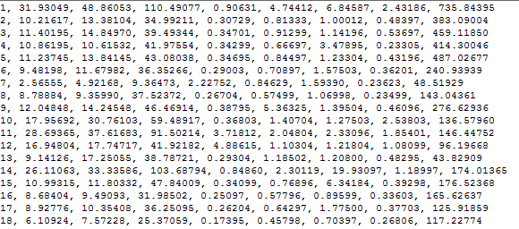
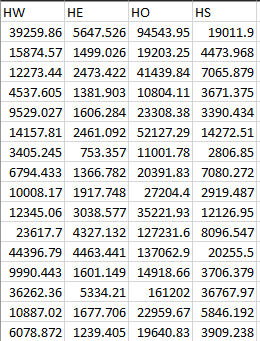
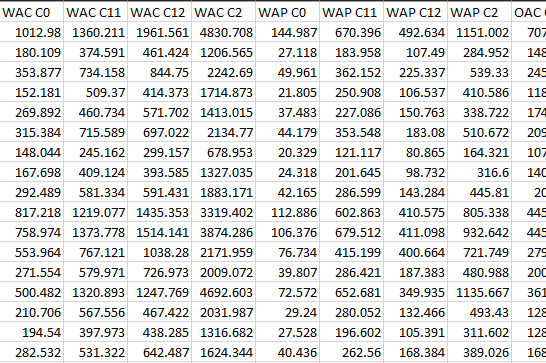
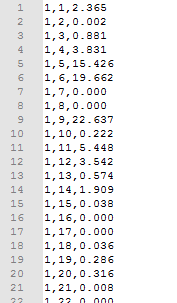
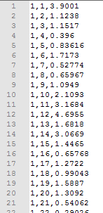
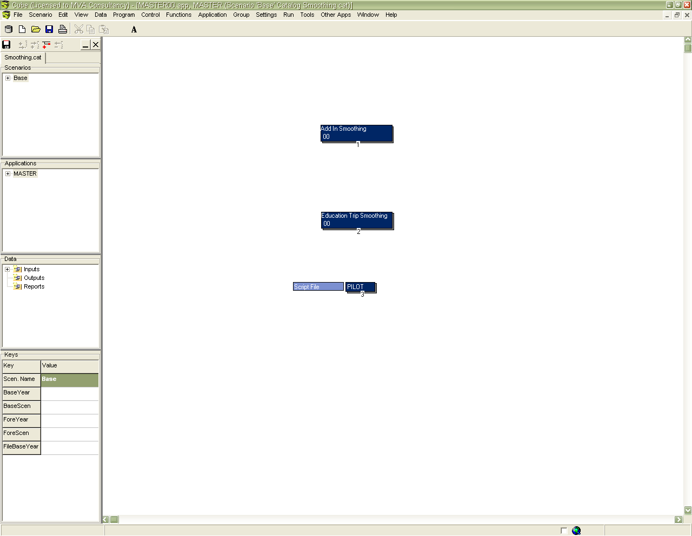
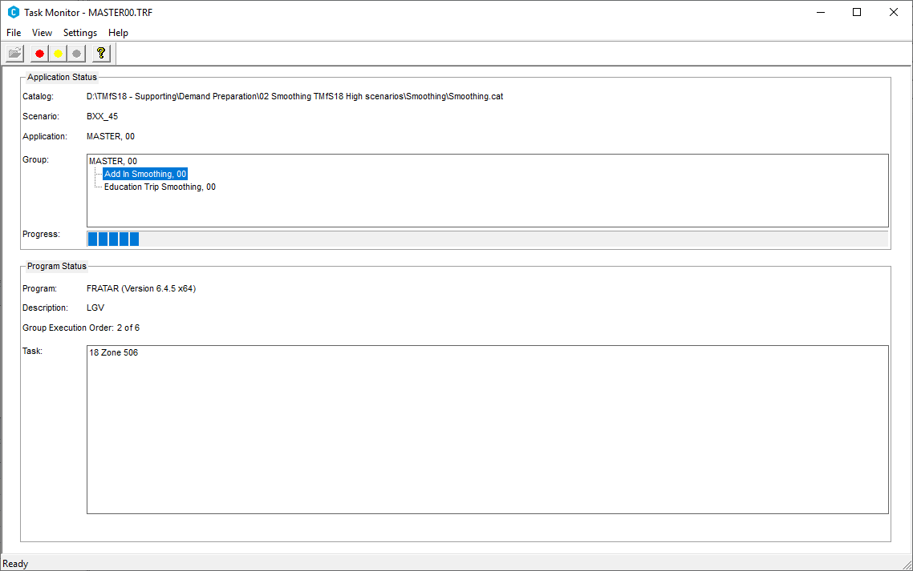

User Guide¶
Overview¶
The following sections describe how to operate the Trip End Model and the relevant model directory structures.
Input Data and Directory Structure¶
The Trip End Model files are located within various folders under a main
TMfS model directory - referred to as tmfs_root. The PC will also
need to have the relevant Cube software files installed. These are
consistent with the files used to run the TMfS model.
As the Trip End Model is an incremental model, it needs to pivot from the existing run of the base year model and/or a previous forecast year scenario. As a result, the base year files must exist on the PC running the Trip End Model before a new forecast year run can be undertaken. Therefore, the calibrated base year trip ends should be located in the directory:
{tmfs_root}\Runs\{base_year}\Demand
where base_year for 2018 would be "18".
The Trip End Model uses various planning data and goods vehicle data output from the TELMoS model. For each modelled year, three files are required, including:
tav_{tel_year}{tel_scenario}.csv- the household and employment data file;tmfs{tel_year}{tel_scenario}[_hw].csv- the population data file. The_hwsuffix is added if the file is split by WAH/WBC; andtrfl{tel_year}{tel_scenario}.dat- the goods vehicle data file. Wheretel_yearis the forecast year andtel_scenariois the TELMoS test scenario code, e.g. "AE" and "18" respectively.
For each new forecast year modelled scenario, a new folder should be
created in delta_root, named using the relevant TELMoS scenario code
(tel_scenario). The three files should be saved in the folder
{delta_root}\{tel_scenario}.
The remaining input data is contained within the "Factors" directory. The files in this folder contain the trip rates and attraction factors described previously. A full list of all input files is described below.
Setting up the Model Run¶
If no previous model run of the Trip End Model has been undertaken for a
forecast year, a new folder should be created in
{tmfs_root}\Runs\{tel_year}\{tel_scenario}. Within this folder, a
further folder named "Demand" should also be created.
Now the directory structure is complete the model executable can be run. This can be undertaken either using the executable GUI or through the command line - via a batch file or other method. The executable takes eight arguments, as follows:
- Delta Root - path for the DELTA files;
- TMfS Root - path for the executable;
- Forecast Year - 2-digit year;
- Forecast TMfS Scenario - what the user is calling the demand scenario which is produced by this run of the Trip End Model;
- Forecast Year TELMoS scenario code;
- Base Year - the year used to pivot from
- Base TMfS Scenario Code - the demand model input set that is being pivoted from; and
- Base Year TELMoS Scenario Code - the planning data used to create the base scenario
Once the arguments have been entered, the model can be run. A model run should typically take less than 5 minutes to complete for one scenario.
Trip End Outputs¶
A successful Trip End Model run will create the following output files:
*.TOD/*.CTEfiles - nine of each, these are the trip end files for input to the demand model;tav_{tel_year}_{tel_scenario}.csv,tmfs{tel_year}_{tel_scenario}.csv,lgv{tel_year}{tel_scenario}.datandhgv{tel_year}{tel_scenario}.dat- these are the files which are used for future pivoting; and*.DATand*TE.DAT- 36 files, these are files for each goods vehicle and add-in category for each time period.
The folder structure containing the various output files is shown below. The content of these folders are used to create trip ends for each subsequent year. The base year can also be used to provide the pivoting year to create subsequent forecast year data.

Output Trip End Files¶
Example TOD File¶
The *.TOD file contains six columns, including:
- Modelled zone;
- C11 Productions (1 Car 1 Adult Household);
- C12 Productions (1 Car 2+ Adult Household);
- C2 Productions (2+ Car Households);
- C0 Productions (0 Car Households); and
- all trip attractions (in person-trips).

Example CTE File¶
The *.CTE file contains similar information with the exception that
columns are disaggregated by car and public transport. The columns for
the CTE file include:
- Modelled zone;
- Car - C11C Productions (1 Car 1 Adult Household);
- Car - C12C Productions (1 Car 2+ Adult Household);
- Car - C2C Productions (2+ Car Households);
- PT - C11P Productions (1 Car 1 Adult Household);
- PT - C12P Productions (1 Car 2+ Adult Household);
- PT - C2P Productions (2+ Car Households);
- PT - C0 Productions (0 Car Households); and
- all trip attractions (in person-trips).

Note: In the *.CTE file the split between car and PT is taken from the
pivot year. The CTE splits are used to start the demand model and the
mode choice model then applies.
Pivoting Files¶
Examples of the tav_XX_SS.csv and tmfsXX_SS.csv files are shown in
figures below. These are used in future year pivoting.
The TAV file contains the relevant planning data file multiplied by the trip attraction rates and then combined into Work (HW), Employers Business (HE), Other (HO) and Education (HS) purposes. This data is then used in conjunction with a similar file from a forecast year to produce attraction growth factors. In this case the factors are the same for all time periods, modes and household types.

Similarly, the tmfsXX_SS.csv file contains the relevant planning data
multiplied by the trip rates described in section "Trip Rate
Calculation". It is used in conjunction with a file for a future year
scenario to produce production growth factors. Different values are
produced by time period, mode and household type. These are designated
in the column headers by A, I and P for the time periods; C11, C12, C2
and C0 for the household types; C and P for car and PT and W, E, O and S
(Work, Employers Business, Other and Education) for the purposes.

Goods Vehicle Files¶
For goods vehicles, *.DAT:

and *TE.DAT files:
are produced for input to the smoothing process.
The hgv{tel_year}{tel_scenario}.dat (and
lgv{tel_year}{tel_scenario}.dat) files are also generated:

These are the TELMoS-based goods vehicle matrices. These are used with their equivalent file from a forecast year scenario to produce goods vehicle growth factors.
New Base Year Planning Data¶
If new base year (2018) land use planning data is produced, this should
be run through the Trip End Model to create new
tav_{tel_year}_{tel_scenario}.csv,
tmfs{tel_year}_{tel_scenario}.csv, lgv{tel_year}{tel_scenario}.dat
and hgv{tel_year}{tel_scenario}.dat files. These new data would then
be applied to calculate new forecast year growth factors. This process
requires the following steps:
- Create a dummy base year folder (e.g. 14);
- Copy the contents of the current "18" folder into this dummy folder;
- Run the Trip End Model with "14" as the base year and "18" as the forecast year, linking to the new "18" planning data into the "18" folder; and
- It is likely that the new base year trip ends will not be completely
identical to the calibrated and validated base year trip ends, so
finally the user needs to copy the original base year
*.TODand*.CTEfiles into the new Base year scenario folder.
In other words, the only new files which are required are the
tmfs18_AXX.csv and tav_18_AXX.csv files.
Add-Ins and Smoothing¶
The "Add-in" process represents the calculation of travel movements that are not contained in the core TMfS demand model. This includes a "smoothing" stage which represents a gravity model process. These stages are associated with forecasting goods vehicles, external trips and education matrices.
To undertake this process, a model user should open the Smoothing.cat
CUBE file located at, {tmfs_root}\Smoothing. On opening the file, a
CUBE Catalog will be opened, as shown below:

In the Scenarios section of the catalogue, right click on Base, select
Add Child and name using the forecast scenario ID and forecast year
(e.g. "AJA_31"). In the pop-up box enter the required details e.g. Base
Year, Base Scenario, Forecast Year, Forecast Scenario. If the base year
is 2007 enter "07". In the "FileBaseYear" box enter the base year. If
this is 2007 enter 7 (rather than 07). Once all details have been
entered select "Run".
The smoothing process then automatically links to the files in the "demand" folder produced by the previous part of the Trip End Model and runs to produce the "add-in" files - goods vehicle, external trips and education matrices. This process in operation is shown below. It takes around 20 minutes to complete one forecast year.

The Smoothing process produces three education matrices in the
demand\{tel_scenario} folder (one for each time period), and six
add-in matrices; HGV, LGV, COM (Home Based Work), EMP (Home Based
Employers Business), OTH (Home Based Other) and PT in the same folder.
Once all files have been produced (*.TOD, *.CTE, Education matrices
and Add-in matrices) these are then the input demand files.
These demand scenario files should be transferred manually into the
relevant folder for undertaking demand model runs. This should be
{tmfs_root}\Runs\{tel_year}\Demand\{tel_scenario}.